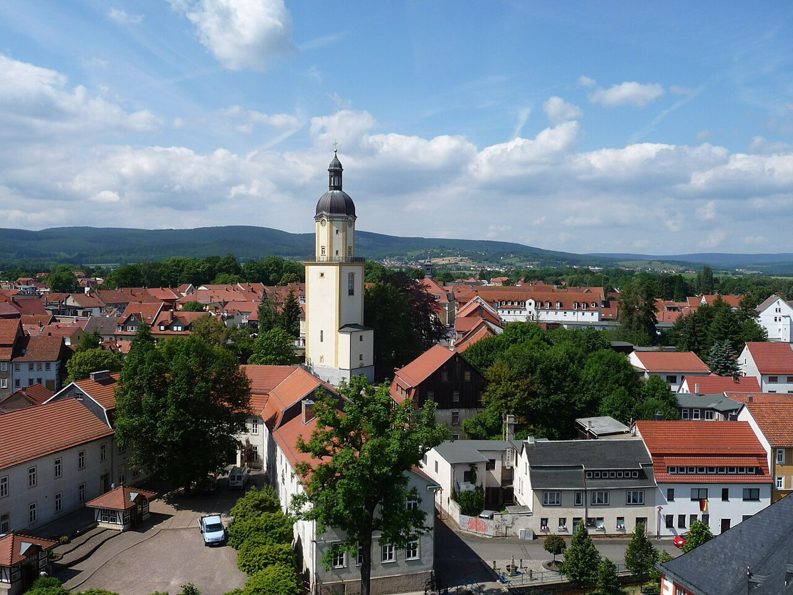

Taken in by his brother — the Pachelbel lineage begins

Within weeks of their father's death, two boys arrived in Ohrdruf, thirty miles from everything they knew. Ten-year-old Sebastian and his brother Johann Jacob had been sent to the household of the eldest Bach brother, Johann Christoph — fourteen years Sebastian's senior, organist of St. Michael's, married less than a year, and living on the thin salary such posts paid. He was twenty-three years old, at the start of his own adult life, and he took in two orphaned brothers because that is what the clan's code required. Sebastian enrolled at the town's Lyceum that spring, and from this point the school registers carry him — the steadiest documentary thread we have through the five least-documented years of his life.
The musical consequence of the arrangement is the era's headline, and it turns on where the young householder had spent his own apprenticeship. Johann Christoph had studied three years in Erfurt with Johann Pachelbel — yes, the Canon's Pachelbel, though that one piece's modern fame badly misrepresents the man his contemporaries knew: the supreme organ pedagogue of central Germany, master of the chorale prelude, author of a limpid and above all systematic keyboard style. Pedagogy was Pachelbel's real monument, and Johann Christoph carried it home intact. Under his brother, Sebastian received the Pachelbel method at one remove: fingering, keyboard fundamentals, chorale playing, and the tradition's core discipline — learning composition by copying and studying repertoire, piece by piece, hand aching, until the music's construction had passed through the pen into the mind. Draw the line of transmission and it is startlingly short: Pachelbel to Johann Christoph to Sebastian, one generation, with no leakage. The most celebrated keyboard teaching in central Germany reached the century's greatest keyboard mind through a single intermediary, in a small-town parlor, delivered by a young man simultaneously working a church job and starting a family.
It is worth pausing on that household's arithmetic, because biography tends to hurry past it. A newly married organist on a modest salary, his own family soon growing, adds two dependent brothers to the table and then delivers, over five years, a complete professional education to one of them. Whatever strain the arrangement bore — and the era's ending, when the free places at that table finally ran out, tells us there was strain — it delivered. And the delivery was not one-directional charity that Sebastian merely received and outgrew. Family duty ran in both directions, and Bach remembered it: years later, established and secure, he took in and trained Johann Christoph's own sons in his turn. The brothers remained close until Johann Christoph's death in 1721. The clan's machinery — orphans absorbed, training delivered, obligations repaid a generation later — worked in this case exactly as six generations of Bachs had designed it to work.
For the timeline's education track, this card sets the first of three cords. Bach's keyboard genealogy now has a spine you can draw on paper: the Pachelbel line, arriving through the brother. Soon it will be joined by the north-German line — Böhm, Reincken, and eventually Buxtehude — and later by the Italians, Vivaldi above all, absorbed by what amounted to mail-order study of printed scores. The mature Bach is precisely the braiding of those three cords, and the braiding begins here, in a grieving ten-year-old's first formal keyboard lessons from the brother who had become his guardian. What the lessons could not contain — the appetite that outran anything a curriculum was prepared to feed — is the subject of the era's most famous story, waiting one card ahead.
Continue with the era essay: Ohrdruf: the brother's apprentice, or go straight to that story: the moonlight manuscript.